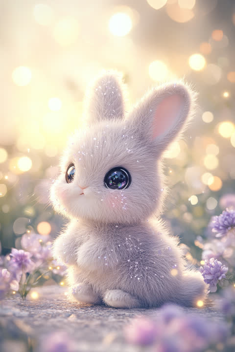

In the language of Five Element fortune-telling, the 'The Rabbit Quietly Feeling Everything' type carries a Wood temperament. Lucky color: moss green.
You may not say much, but you're feeling more than almost anyone around you — the color of a sunset, one line of a song, a small kindness others walk right past. You keep your opinions soft, but your inner sense of what's beautiful is precise and non-negotiable, and your "I just like it" turns out to be right remarkably often. You open up slowly; once someone's in, they're in for good. Your element is Wood — quietly growing a world of your own, in its own season. Lucky color: moss green. Tip: say the "I just like it" out loud more often — your taste is worth about three times what you think it is.
You'd rather tilt the umbrella toward someone than shout "I love you" across the street. You notice the reason behind their silence and sit beside it without asking questions — quiet companionship is your particular genius. You dislike conflict enough to let your own words wash away with the rain sometimes, but your gentleness soaks in deeper than you realize. Your Wood energy points to a love that roots deepest when watered slowly. Lucky action: keep a houseplant nearby. Tip: swallowed words don't disappear — they accumulate. Voice the small frustrations while they're still drizzle, not storm.
You sit out the speed race — and refuse to compromise your own stroke. You'd rather finish three things beautifully than ten things roughly, and the details of your work carry a quiet, deliberate pride. You do your best work in calm waters, away from constant competition and clashing egos. Your Wood energy points to patiently grown results maturing into deep trust. Lucky action: keep a small houseplant on your desk. Tip: careful work is surprisingly invisible when you stay quiet about it — get in the habit of adding one line: "here's what I did differently."
Design, hairstyling, photography, pastry and culinary work — the making things professions. You speak through the work rather than the words, and in any job where the ability to sense the beauty and comfort in the details feeds straight into quality, your quiet obsessiveness becomes the strength itself.
The key to your growth is getting what you make out into the open more often. There's a sure sense of beauty inside you, but as far as the world is concerned, anything you don't show might as well not exist. Fear of judgment is a natural reflex — but feedback is an opinion about the work, not a verdict on you. Practice that separation deliberately, and the times you learn will start outnumbering the times you get hurt. And if you have a habit of bottling up frustration and unease, aim to "say it while it's small" before it grows — it saves a remarkable amount of wear and tear on your relationships.
This quiz scores your Personality, Love, and Career types independently, so the three don't always come out as the same type. Curious what your real type is? Try the free 3-minute quiz.